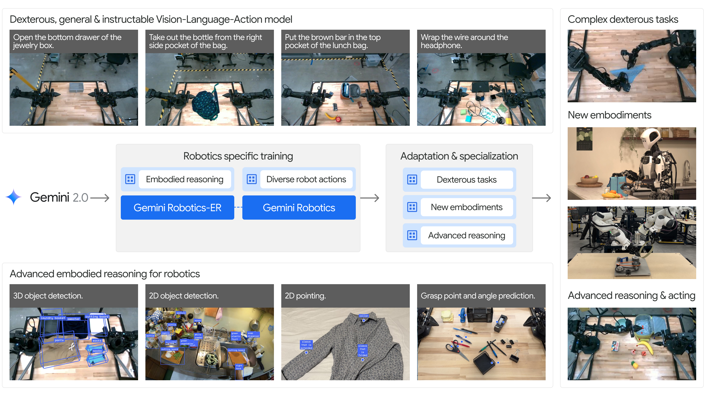
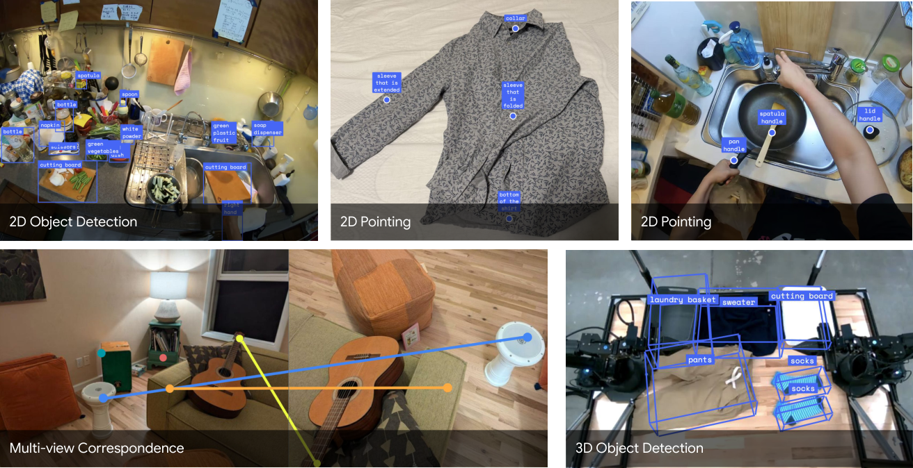
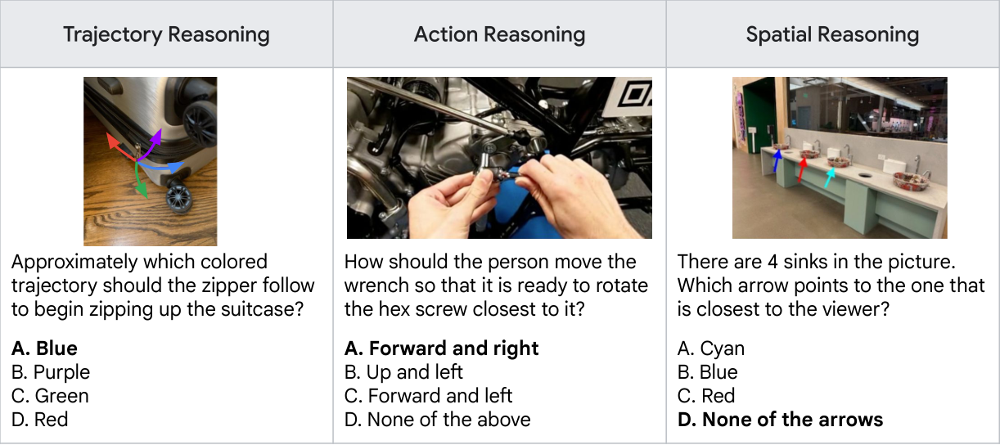
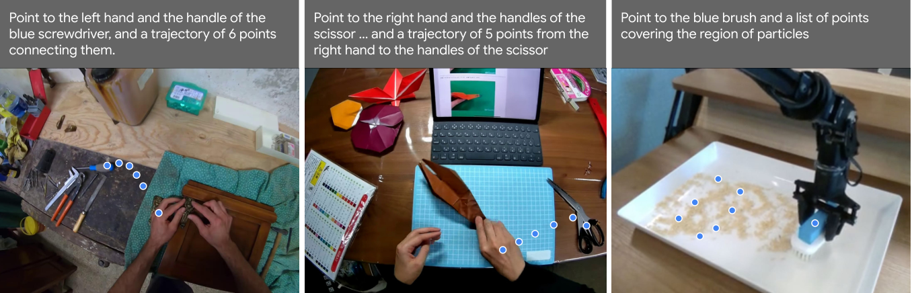
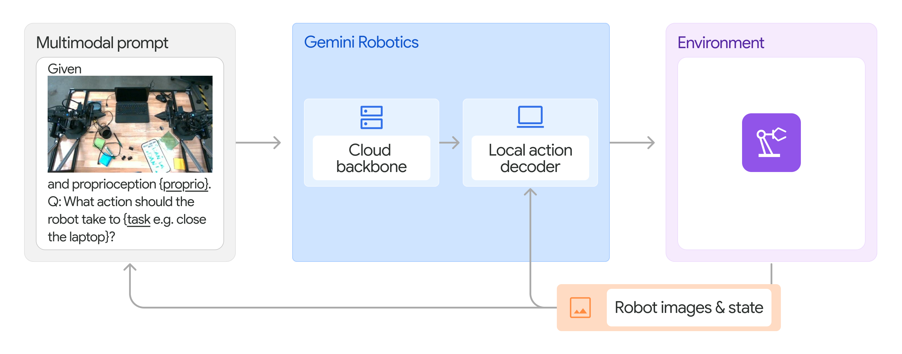
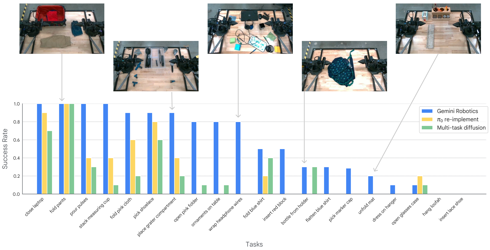
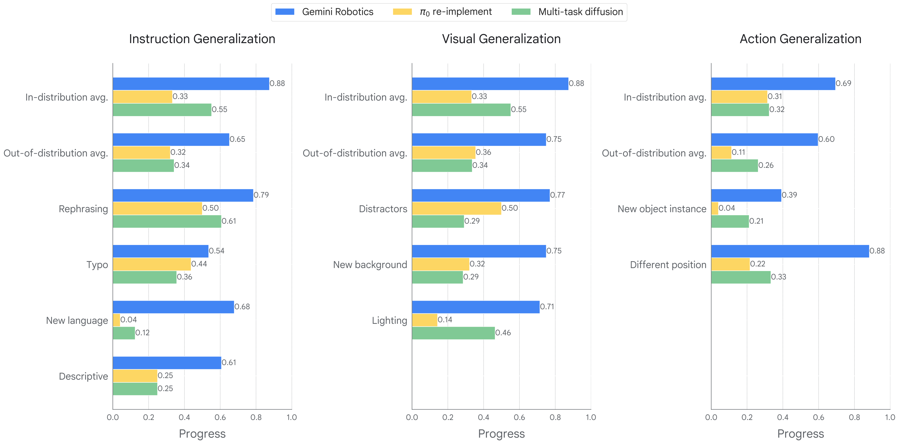
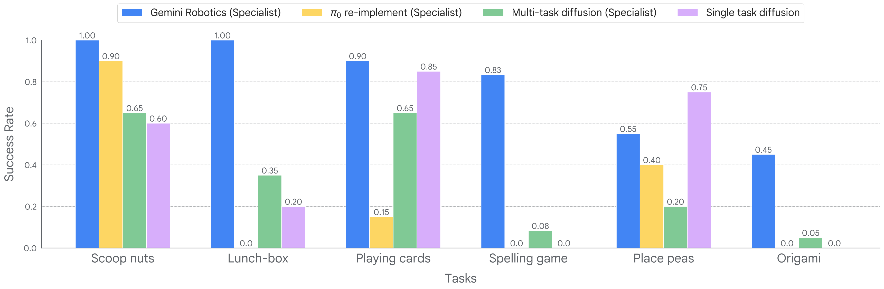
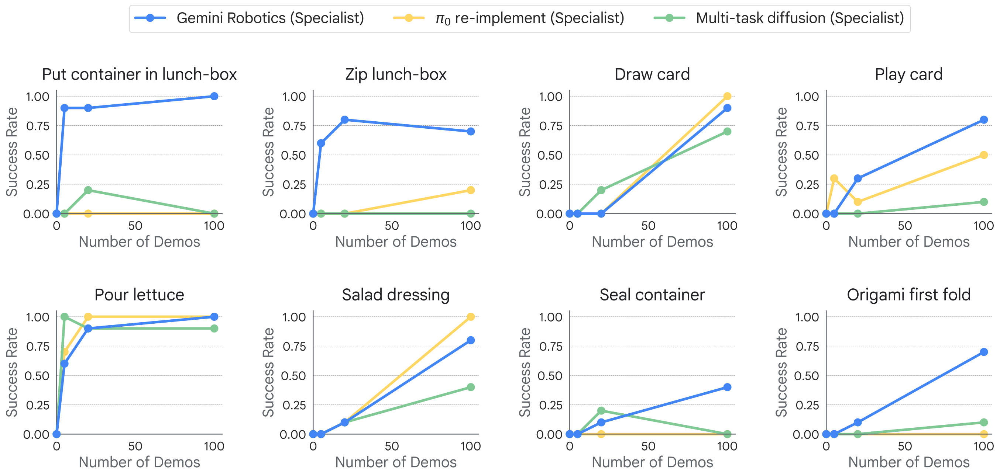
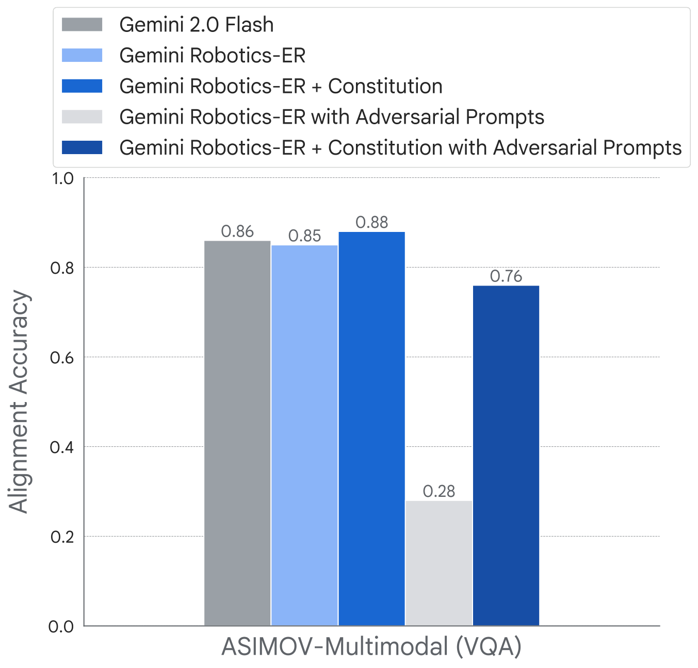

V7. Gemini Robotics: Bringing AI into the Physical World¶
0. 읽기 전 약어 및 핵심 용어¶
이 문서를 읽기 전에 아래 약어와 용어를 먼저 정리한다. 이후 본문에서는 괄호 안의 약어를 사용한다.
- Artificial Intelligence (AI): 사람의 지각, 추론, 학습, 의사결정 능력을 기계가 수행하도록 만드는 인공지능 분야를 뜻한다.
- Vision-Language Model (VLM): 이미지와 텍스트를 함께 입력받아 시각-언어 이해나 생성 작업을 수행하는 모델이다.
- Vision-Language-Action (VLA): 시각 관측과 언어 명령을 함께 받아 로봇 action까지 생성하는 모델 또는 학습 패러다임이다.
- Visual Question Answering (VQA): 이미지나 비디오를 보고 자연어 질문에 답하는 vision-language task이다.
- Out-of-Distribution (OOD): 학습 데이터 분포와 다른 object, scene, task, embodiment, environment 조건을 뜻한다.
- Experience Replay (ER): 이전 task나 episode의 데이터를 buffer에 저장했다가 다시 학습해 forgetting을 줄이는 방법이다.
- Robotics Transformer (RT): robot observation을 입력받아 action을 예측하는 transformer 기반 robot policy 계열을 뜻한다.
- Robotics Transformer 2 (RT-2): web-scale vision-language knowledge와 robot trajectory를 함께 학습해 action token을 생성하는 VLA 모델이다.
- A Low-cost Open-source Hardware System for Bimanual Teleoperation (ALOHA): 저비용 양팔 teleoperation hardware와 imitation learning setup을 뜻한다.
- ASIMOV safety framework (ASIMOV): Gemini Robotics 맥락에서 robot action의 안전성과 정책 제약을 다루기 위한 safety evaluation/framework 이름으로 쓰인다.
- Large Vocabulary Instance Segmentation (LVIS): long-tail object category를 포함하는 large-vocabulary instance segmentation dataset이다.
1. Metadata¶
| Field | 내용 |
|---|---|
| ID | V7 |
| Title | Gemini Robotics: Bringing AI into the Physical World |
| Authors | Gemini Robotics Team, Google DeepMind |
| Affiliation / Team | Google DeepMind |
| Venue / Status | arXiv technical report |
| Date | 2025-03-25 |
| Link | https://arxiv.org/abs/2503.20020 |
| Local source | paper_corpus/sources/V7 |
| Source figures | paper_corpus/figures_source/V7/manifest.md |
2. 핵심 요약¶
Gemini Robotics는 Gemini 2.0을 물리 세계로 확장하기 위한 Google DeepMind의 robotics foundation model report다. 논문은 두 모델을 제시한다. 첫째, Gemini Robotics-ER는 embodied reasoning을 강화한 VLM으로 object detection, pointing, trajectory prediction, grasp prediction, multi-view correspondence, 3D bounding box prediction을 수행한다. 둘째, Gemini Robotics action model은 Gemini Robotics-ER 위에 구축된 VLA로, cloud VLA backbone과 on-robot local action decoder를 결합해 real robot을 직접 제어한다.
핵심 메시지는 "general-purpose robot을 만들려면 internet-scale multimodal reasoning을 physical action data로 grounding해야 하며, embodied reasoning과 low-latency action generation이 함께 필요하다"는 것이다.
3. 왜 중요한가?¶
- Google DeepMind가 Gemini 2.0 기반으로 physical AI와 generalist VLA를 공식적으로 연결한 대표 tech report다.
- embodied reasoning을 별도 benchmark인 ERQA로 평가하고, 이후 VLA action model에 연결하는 구조를 제시한다.
- action model은 large VLA backbone을 cloud에 두고 local action decoder를 robot onboard에서 실행해 latency를 보완한다.
- ALOHA 2 fleet에서 12개월간 수집한 수천 시간 규모 teleoperated robot action data와 non-action multimodal data를 함께 사용한다.
- post-training으로 long-horizon dexterity, reasoning-enhanced generalization, fast adaptation, new embodiment adaptation을 모두 다룬다.
- robotics foundation model에서 safety를 별도 섹션으로 다루며 content safety, semantic action safety, ASIMOV benchmark, constitutional AI를 논의한다.
4. Model Family Overview¶

Figure 1. Gemini Robotics family overview. Gemini 2.0의 multimodal capability 위에 embodied reasoning, action generation, specialization, safety를 추가한다. Source figure: src/assets/gr_overview.pdf.
논문은 embodied AI를 두 단계로 본다.
| 단계 | 모델 | 역할 |
|---|---|---|
| Passive physical understanding | Gemini Robotics-ER | spatial/temporal/3D/affordance reasoning |
| Active physical interaction | Gemini Robotics action model | robot action chunks를 생성해 real robot control |
이 구분은 스터디에서 중요하다. RoboBrain이 planning-affordance-trajectory intermediate representation을 강조했다면, Gemini Robotics는 embodied reasoning model과 action model을 명시적으로 결합한다.
5. Embodied Reasoning and ERQA¶

Figure 2. Embodied reasoning capabilities. Gemini 2.0은 2D detection/pointing, trajectory/grasp prediction, multi-view correspondence, 3D bounding box prediction을 수행한다. Source figure: src/assets/ER/er_overview_v2.pdf.
논문에서 embodied reasoning은 VLM이 real world의 object와 spatial concept을 grounding하고, 이를 downstream robotics application에 쓸 수 있는 signal로 합성하는 능력이다.
ERQA는 이를 평가하기 위한 benchmark다.
| ERQA property | 내용 |
|---|---|
| 형식 | multiple-choice VQA |
| 문항 수 | 400 questions |
| 범주 | spatial reasoning, trajectory reasoning, action reasoning, state estimation, pointing, multi-view reasoning, task reasoning |
| multi-image 비율 | 28% |
| 특징 | object recognition/counting보다 physical action에 필요한 reasoning을 평가 |

Figure 3. ERQA examples. 단순 perception보다 action/spatial/multi-view reasoning이 필요한 질문들로 구성된다. Source figure: src/assets/ER/erbenchmark/er_benchmark_examples.pdf.
ERQA와 관련 benchmark 결과는 다음과 같다.
| Benchmark | Gemini 2.0 Flash | Gemini 2.0 Pro Experimental | GPT-4o | Claude 3.5 Sonnet |
|---|---|---|---|---|
| ERQA | 46.3 | 48.3 | 47.0 | 35.5 |
| RealworldQA | 71.6 | 74.5 | 71.9 | 61.4 |
| BLINK | 65.0 | 65.2 | 62.3 | 60.2 |
Chain-of-Thought prompting도 효과가 있다.
| Prompt | Gemini 2.0 Flash | Gemini 2.0 Pro Experimental | GPT-4o |
|---|---|---|---|
| Without CoT | 46.3 | 48.3 | 47.0 |
| With CoT | 50.3 | 54.8 | 50.5 |
이 결과는 physical AI에서 "reasoning trace"가 단순 설명이 아니라 spatial grounding을 강화하는 도구가 될 수 있음을 보여준다.
6. Spatial Outputs as Robot-Useful Representations¶
Gemini Robotics-ER는 여러 robotics-friendly output format을 사용한다.
| Capability | Output representation | 의미 |
|---|---|---|
| 2D object detection | \([y_0,x_0,y_1,x_1]\) | normalized image bounding box |
| 2D pointing | \([y,x]\) | object, part, free space, affordance point |
| trajectory prediction | sequence of 2D points | coarse motion path |
| top-down grasp prediction | \((y,x,\theta)\) | grasp center and rotation angle |
| multi-view correspondence | paired 2D points | 같은 3D point의 multi-view correspondence |
| 3D bounding box | metric 3D box | monocular image에서 3D object extent 추정 |
2D pointing benchmark에서 Gemini Robotics-ER는 다음 성능을 보고한다.
| Benchmark | Gemini Robotics-ER | Gemini 2.0 Flash | GPT-4o | Molmo 72B |
|---|---|---|---|---|
| Paco-LVIS | 71.3 | 46.1 | 16.2 | 47.1 |
| Pixmo-Point | 49.5 | 25.8 | 5.0 | 12.5 |
| Where2Place | 45.0 | 33.8 | 20.6 | 63.8 |

Figure 4. 2D trajectory prediction examples. Gemini 2.0은 start/end point를 기반으로 image-grounded trajectory를 생성한다. Source figure: src/assets/ER/trajectory/trajectory_collage_v2.pdf.
이 부분은 RoboBrain과 직접 연결된다. 둘 다 2D trajectory를 intermediate representation으로 사용하지만, Gemini Robotics는 이를 VLA action model의 reasoning-enhanced variant로 연결한다.
7. Gemini Robotics Action Model¶

Figure 5. Gemini Robotics action model architecture. cloud VLA backbone과 on-robot local action decoder가 action chunks를 생성한다. Source figure: src/assets/actions/action_model_overview_new_alt.pdf.
Gemini Robotics action model은 Gemini-derived VLA다. input은 scene images와 task instruction이며, output은 robot이 실행할 action chunk다.
| Component | 위치 | 역할 |
|---|---|---|
| Gemini Robotics backbone | cloud | multimodal prompt를 처리하고 high-level action representation 생성 |
| Local action decoder | robot onboard computer | latency를 보완하며 low-level action chunk로 변환 |
latency 관련 수치가 중요하다.
| Metric | 값 |
|---|---|
| backbone query-to-response latency | under 160 ms |
| raw observation to low-level action chunk latency | approximately 250 ms |
| effective control frequency | 50 Hz |
데이터는 ALOHA 2 robot fleet에서 12개월간 수집한 수천 시간의 real-world expert demonstrations를 포함한다. 또한 web documents, code, image/audio/video multimodal content, embodied reasoning/VQA data 같은 non-action data도 함께 사용한다.
8. Out-of-the-box Dexterous Manipulation¶

Figure 6. Out-of-the-box dexterous manipulation. 20개 short-horizon dexterous tasks에서 Gemini Robotics action model과 baselines를 비교한다. Source figure: src/assets/actions/actions-base-1-sr.pdf.
baselines는 두 가지다.
| Baseline | 설명 |
|---|---|
| \(\pi_0\) re-implementation | 동일 data mixture로 학습한 open-weight VLA baseline |
| multi-task diffusion policy | ALOHA Unleashed에서 영감을 받은 task-conditioned diffusion policy |
논문은 20개 short-horizon dexterous tasks에서 Gemini Robotics action model을 평가한다. model은 절반의 task에서 80% 이상 success rate를 보이며, deformable object manipulation과 challenging tasks에서 baselines보다 강하다고 보고한다. 특히 "open pink folder", "insert red block", "wrap wire around headphone" 같은 hard task에서는 Gemini Robotics만 non-zero success를 보이는 경우가 있다고 설명한다.
9. Generalization¶

Figure 7. Generalization benchmark. visual, instruction, action generalization 세 축에서 progress score를 비교한다. Source figure: src/assets/actions/generalization_results_horizontals_progress.pdf.
generalization benchmark는 85 tasks로 구성된다.
| Category | 비율 | 예시 |
|---|---|---|
| in-distribution | 20% | training distribution과 유사 |
| visual generalization | 28% | background, lighting, distractor, texture 변화 |
| instruction generalization | 28% | paraphrase, typo, new language, detail level 변화 |
| action generalization | 24% | initial condition 변화, object shape/property 변화 |
논문은 Gemini Robotics가 세 generalization axis 모두에서 baselines보다 안정적이며, 특히 new language instruction이나 target object visual variation처럼 baselines가 catastrophic failure를 보이는 상황에서도 non-zero performance를 유지한다고 말한다.
10. Specialization and Adaptation¶

Figure 8. Long-horizon dexterity after specialization. origami, lunch-box packing, spelling game, card game 등 challenging tasks에서 specialized Gemini Robotics를 평가한다. Source figure: src/assets/actions/post_training_sr.pdf.
post-training은 네 방향으로 진행된다.
| Direction | 내용 | 결과 요약 |
|---|---|---|
| long-horizon dexterity | origami fox, lunch-box packing, spelling game 등 | specialist models average 79% success |
| reasoning-enhanced generalization | trajectory reasoning을 action prediction과 더 가깝게 relabeling | OOD reasoning/spatial/semantic tasks 성능 향상 |
| fast adaptation | short-horizon new tasks를 적은 demo로 학습 | 8개 중 7개 task에서 100 demos 이하로 70% 이상 success |
| new embodiment adaptation | bi-arm Franka, Apollo humanoid | bi-arm Franka에서 average 63% success, generalization tests에서 diffusion baseline보다 강함 |
long-horizon dexterity에서 특히 lunch-box packing은 100% success로 보고되며, task completion이 2분 이상 걸리는 full long-horizon task다. spelling game에서는 printed images뿐 아니라 training에 없던 hand-drawn sketches 6개 중 4개를 맞춘다고 보고한다.

Figure 9. Fast adaptation. 최대 100 demonstrations로 새로운 short-horizon task를 fine-tuning한다. Source figure: src/assets/actions/fast_adaptation_sr_new.pdf.
이 결과는 "large generalist VLA가 few-shot robot skill adaptation에 유리한가?"라는 질문에 대해 강한 evidence를 제공한다. 단, 논문은 여전히 task-specific fine-tuning을 사용한다는 점도 같이 봐야 한다.
11. Safety¶

Figure 10. ASIMOV-Multimodal safety evaluation. physical-world safety question answering에서 Gemini 2.0 Flash와 Gemini Robotics-ER를 평가한다. Source figure: src/assets/safety/maxer-asimov-multimodal-new.pdf.
논문은 robotics foundation model의 safety를 세 층으로 나눈다.
| Safety layer | 설명 |
|---|---|
| physical action safety | collision avoidance, workspace bounds, stable mobility, force regulation 등 low-level control safety |
| content safety | harmful conversational content, privacy, inappropriate advice 방지 |
| semantic action safety | soft toy on hot stove, allergen serving, knife pointing 등 open-domain physical safety reasoning |
Gemini Robotics-ER는 pointing 같은 새로운 output modality가 있기 때문에, bias-inducing pointing query에 대한 rejection training도 수행한다. 논문은 supervised fine-tuning 후 bias-inducing pointing query rejection rate가 baseline 20%에서 96%로 올라간다고 보고한다.
semantic action safety는 ASIMOV datasets로 평가한다. 논문은 constitution/post-training이 adversarial prompt 상황에서도 safety understanding degradation을 줄일 수 있다고 설명한다.
12. 한계와 후속 연구 포인트¶
| 한계 | 의미 | 후속 연구 방향 |
|---|---|---|
| fine-grained numerical precision | point/box prediction이 low-level control에 충분히 정밀하지 않을 수 있음 | geometric calibration, uncertainty-aware grounding, closed-loop correction |
| long-video spatial grounding | Gemini 2.0도 긴 video에서 spatial relationship grounding에 어려움이 있을 수 있음 | temporal memory, world model, video-grounded policy |
| cloud backbone latency/dependency | low-latency decoder가 있지만 cloud inference 구조는 deployment 제약이 있음 | on-device distillation, edge VLA, hierarchical local controller |
| cross-embodiment transfer | new embodiment adaptation은 fine-tuning 기반이며 zero-shot은 아직 future goal | embodiment-invariant action representation |
| safety | semantic action safety는 open-domain이라 exhaustive enumeration이 불가능 | constitutional AI, formal constraints, runtime safety monitor 결합 |
13. 다른 논문과의 연결¶
| 연결 논문 | 연결점 |
|---|---|
| RT-2 | web-scale VLM knowledge를 robot action으로 transfer한다는 큰 방향을 계승 |
| OpenVLA / \(\pi_0\) | generalist VLA action model 경쟁 축. Gemini Robotics는 closed frontier backbone과 cloud-local decoder 구조가 특징 |
| CoT-VLA | action 전 embodied reasoning 또는 trajectory intermediate를 활용한다는 점에서 연결 |
| SpatialVLA | physical world grounding과 3D/spatial understanding 강화라는 문제의식 공유 |
| RoboBrain | planning/affordance/trajectory intermediate representation과 강하게 연결 |
| RoboMamba | robot reasoning과 action efficiency를 다루지만, Gemini Robotics는 frontier VLM 기반 + real-world fleet data 중심 |
| World Model 계열 | trajectory, temporal reasoning, physical safety는 predictive world representation과 직접 연결되는 후속 질문 |
스터디 흐름에서는 RoboBrain 다음에 Gemini Robotics를 배치하면 좋다. RoboBrain이 capability decomposition과 dataset-driven robotic brain을 제시했다면, Gemini Robotics는 frontier multimodal foundation model을 실제 robot action과 safety까지 확장한 산업/연구 최전선 사례다.
14. 발표 구성 제안¶
- digital AI와 physical AI의 gap을 embodied reasoning과 action grounding으로 설명한다.
- ERQA benchmark와 Gemini Robotics-ER capability를 소개한다.
- 2D/3D spatial output representation이 왜 robot control에 유용한지 설명한다.
- Gemini Robotics action model의 cloud backbone + local decoder 구조와 latency 수치를 짚는다.
- dexterous manipulation, generalization, post-training/adaptation 결과를 세 축으로 정리한다.
- safety section을 별도 슬라이드로 두고 physical/content/semantic action safety를 구분한다.
15. 토론 질문¶
| 질문 | 논의 포인트 |
|---|---|
| cloud VLA backbone + local decoder는 practical robot deployment에 적절한 구조인가? | latency, reliability, privacy, edge deployment |
| embodied reasoning benchmark가 real robot success를 얼마나 예측할까? | ERQA score와 manipulation success의 상관 |
| action model이 reasoning intermediate를 출력하는 것이 interpretability와 성능을 동시에 높일까? | CoT-VLA, RoboBrain, trajectory CoT와 비교 |
| 운영/평가 관점에서는 어떤 연구 질문이 나올까? | fleet data collection design, A/B testing, safety evaluation, adaptation cost-performance trade-off |
16. 한 줄 정리¶
Gemini Robotics는 Gemini 2.0의 embodied reasoning을 robot action data로 grounding해, physical world에서 이해하고 행동하는 general-purpose VLA로 확장하려는 frontier robotics foundation model report다.